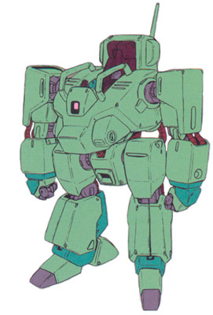

| Petite Mobile Suit |
|
|  | |
General and Technical Data |
|
|
Unit type: Lunar use mobile suit Operator: Lunar Management Corporation Fixed armaments: None Optional armaments: Khrizantema (4 round magazine), Browning M2HB |
|
| Technical and Historical Notes | |
|
A small retooled construction mobile worker, the Lunar Management Companies Petite Mobile Suit is weak when faced with Zeon or Federal model mobile suits, being designed primarily to fight unruly civilians and armored cars rather than for mobile suit on mobile suit combat.
Arming medium sized anti-tank weaponry, the Petite is not entirely unarmed, and does mount AMBAC and reasonable maneuverability. A sturdier and more agile frame makes it slightly better armored and more maneuverable than the Dracken E, at the expense of armament. Small armor plating gives them good resistance to handheld weaponry, but mobile suit weaponry will still tear it to shreds. However, many models are still used in defense of lunar cities, their governments unable to afford large numbers of Zaku I models. |
 RPG quick stats sheet
RPG quick stats sheet {kind=link}
{kind=link}